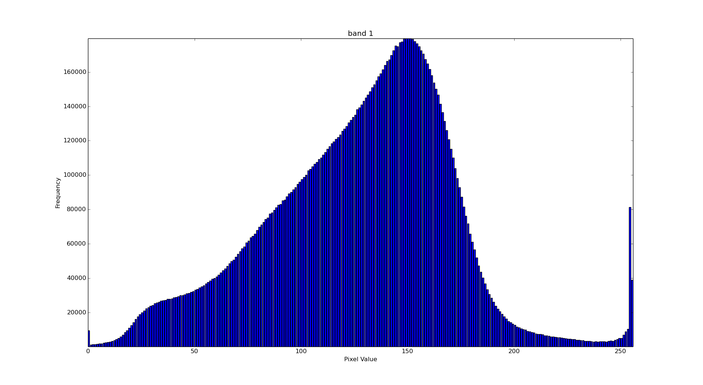
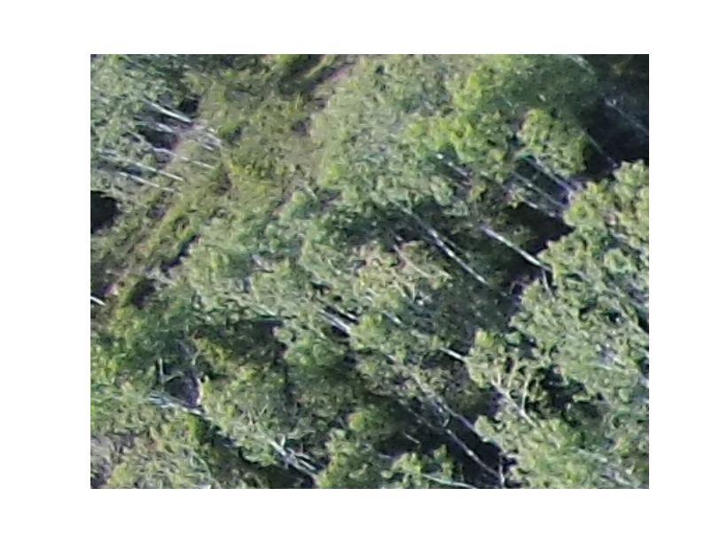
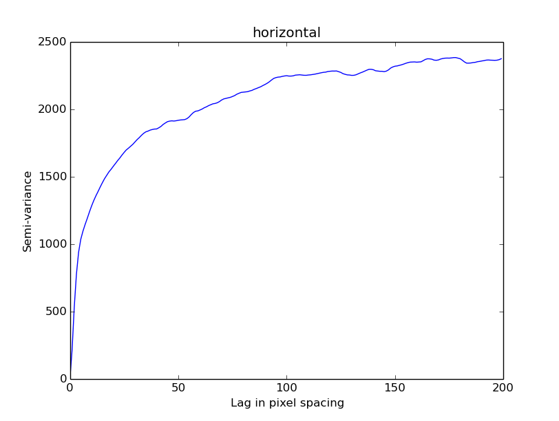
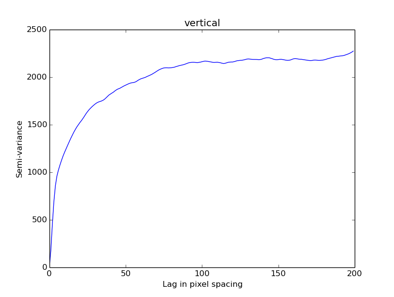

Introduction
This lab consists of a series of exercises designed to introduce spatial statistics in remotely sensed images. The lab consists of two main components:
- Creation of software functions for computing image spatial statistics
- Application of the developed software functions to a selection of remotely sensed images and the interpretation of their results.
Opening Images in Python
The image $I$ used in this lab is shown below.

To open an image in python use the following code:
Image Histogram
The histogram of an image describes the distribution of digital numbers within an image. The histogram of the first band of image $I$ is shown below. 
Mean Vector
The mean vector $\bar{x}$ of an Image $I$ describes the first moment of the distribution of digital numbers. It defines the central tendancy of the distribution. For an image cconsisting of $n$ pixels it can be computed for each band $j$ as:
$$\bar{x}_j = \frac{\sum_{i=1}^{n}{I_{ji}}}{n} = \begin{matrix} 126.95506852 \\ 143.84906533 \\ 108.55815746 \end{matrix}$$Median
The Median of an image band consists of the central digital number within the histogram. It is an alternative representation of the central tendancy of the distribution of digital numbers. The median value for the first band of image $I$ is:
$$median = 128$$Mode
The Mode of an image band consists of the most frequent digital number within the histogram. It is an alternative representation of the central tendancy of the distribution of digital numbers. The modal value for the first band of image $I$ is:
$$mode = 150$$Covariance Matrix
The Covariance Matrix $C$ of an Image $I$ describes both the dispersion of digital numbers within a given band, and the correlations between pixels in different spectral bands. For an Image $I$ consisting of $n$ pixels can be computed for each band pair $j k$ as: $$C_{jk} = \frac{1}{n-1}\sum_{i=1}^{n}{(I_{ji} - \bar{x}_{j})(I_{ki} - \bar{x}_{k})} = \begin{matrix} 1821.56873726 & 1795.15389434 & 1579.34756691 \\ 1795.15389434 & 1886.32590192 & 1518.08774039 \\ 1579.34756691 & 1518.08774039 & 1710.1605467 \end{matrix}$$
Skewness
The skewness $S$ of an Image $I$ describes the assymetry of the histogram of digital numbers. For an Image $I$ consisting of $n$ pixels can be computed for each band $j$ as:
$$S_j = \frac{1}{n}\sum_{i=1}^{n}{(\frac{I_{ji} - \bar{x}_{j}}{\sigma_{j}})^{3}} = -0.20869281942845333$$Kurtosis
The kurtosis $K$ of an Image $I$ describes the sharpness of the histogram of digital numbers. For an Image $I$ consisting of $n$ pixels it can be computed for each band $j$ as:
$$K_j = \frac{1}{n}\sum_{i=1}^{n}{(\frac{I_{ji} - \bar{x}_{j}}{\sigma_{j}})^{4}} = 9.9685043924346759e-07$$Semi-Variance and the Semi-Variogram
The semi-variance of an image $I$ describes, on average, how correlated pixels in an image are for a given lag of $h$ (in pixels). For an Image $I$ consisting of $m$ pixel pairs the semi-variance can be computed for each band as:
$$\gamma(h) = \frac{1}{2m}\sum_{i=1}^{m}(z(x_{i}) - z(x_{i} + h))^2$$   